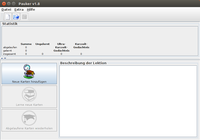
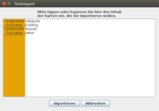

Pauker
Dieser Artikel wurde für die folgenden Ubuntu-Versionen getestet:
Ubuntu 16.04 Xenial Xerus
Zum Verständnis dieses Artikels sind folgende Seiten hilfreich:
Pauker 
 ist ein Vokabeltrainer. Er ist quelloffen und als Java-Programm plattformunabhängig. Pauker erinnert sehr stark an gewöhnliche Karteikarten - ist aber viel mehr als das. Das Programm wechselt beim Lernen ständig zwischen Ultrakurzzeitgedächtnis und Kurzzeitgedächtnis. Enthalten sind eine Fülle an fertigen Wörterdateien. Das Programm lässt sich auch über das Wörter lernen hinaus einsetzen. Auch dazu sind fertige Listen auf der Entwicklerseite vorhanden.
ist ein Vokabeltrainer. Er ist quelloffen und als Java-Programm plattformunabhängig. Pauker erinnert sehr stark an gewöhnliche Karteikarten - ist aber viel mehr als das. Das Programm wechselt beim Lernen ständig zwischen Ultrakurzzeitgedächtnis und Kurzzeitgedächtnis. Enthalten sind eine Fülle an fertigen Wörterdateien. Das Programm lässt sich auch über das Wörter lernen hinaus einsetzen. Auch dazu sind fertige Listen auf der Entwicklerseite vorhanden.
Das Spezielle an diesem Programm ist die Lernphase, welche aktiv vom Programm organisiert wird. Neue Wörter werden während einer kurzen Zeitspanne zum Lernen angeboten und anschließend abgefragt. Wörter, welche es nicht vom Ultrakurzzeitgedächtnis ins Kurzzeitgedächtnis geschafft haben, werden in einer weiteren Lernphase wieder angeboten.
Pauker ist interessant für alle, die auf verschiedenen Betriebssystemen Vokabeln oder anderes lernen möchten.
Voraussetzungen¶
Das Programm erfordert eine Java-Laufzeitumgebung (JRE), die mindestens der Version 1.6 (Java 6) oder neuer entsprechen sollte. OpenJDK 7 und 8 wurden erfolgreich getestet.
Installation¶
Das folgende Paket muss installiert werden [1]:
pauker (universe)
 mit apturl
mit apturl
Paketliste zum Kopieren:
sudo apt-get install pauker
sudo aptitude install pauker
Manuell¶
Statt der Installation aus den offiziellen Paketquellen kann man auch die Datei pauker-1.8.jar  herunterladen und in einem beliebigem Ordner im Homeverzeichnis speichern.
herunterladen und in einem beliebigem Ordner im Homeverzeichnis speichern.
Hinweis!
Fremdsoftware kann das System gefährden.
Der Programmstart erfolgt dann – wie bei Java-Programmen üblich – im Terminal mit [2][3]:
java -jar /PFAD/ZUR/pauker-1.8.jar
Pauker einrichten¶
|  |
| Der erste Start |
Es gibt nicht besonders viele Einstellungsmöglichkeiten. Man kann aber gerade die Dauer des Lernens im Ultrakurzzeit-Gedächtnis und im Kurzzeit-Gedächtnis bestimmen. Ferner kann man die Reihenfolge der Abfrage und die Verwendung von Groß- und Kleinschreibung einstellen.
Wörter erfassen¶
Wie bei anderen Vokabeltrainern, welche optisch mit Karteikarten arbeiten, können die Vorderseite und die Rückseite von Lernkarten gestaltet werden - allerdings nur in Textform. Fertige Dateien auf der Entwicklerseite sind in mehreren Sprachen thematisch geordnet, z.B. Englisch - Deutsch: anspruchsvolle Vokabeln aus Harry-Potter-Büchern, Verben, Kleider, usw. Wer Lust hat, kann hier aber auch die Beitrittsjahre der Schweizer Kantone zur Eidgenossenschaft lernen.
|  |
| Wörterliste anlegen |
In Pauker können auch selbst Wörterlisten angelegt werden. Diese Funktion wird über "Datei -> Textimport" aufgerufen. Dann können neue Wörter eingeben werden, einmal für die Vorderseite und einmal für die Rückseite.
Beispiel für eine deutsch-englische Vokabeldatei:
| Neue Vokabeln erfassen | |
| Gebäude | building |
| Wasser | water |
Alternativ können Wörterlisten mit einer Tabellenkalkulation wie LibreOffice Calc oder Gnumeric erstellt und im .csv-Format abgespeichert werden. Hierbei wird die Vorderseite in Spalte A und die Rückseite in Spalte B eintragen. Diese Datei kann man über "Datei -> Öffnen" einfügen.
Lernen¶
Sobald eine Datei geöffnet ist, kann das Üben gestartet werden. Es folgt zuerst eine Lernphase im Ultra-Kurzzeitgedächtnis. Standardmäßig ist die Zeitspanne auf 18 Sekunden eingestellt. Nach der kurzen Einprägephase folgt die Überprüfung des eben Gelesenen. Alles, was nun schon gewusst wird, geht weiter. Der Rest wird zurückgestellt. Das Lernen von neuen Karten geht nun weiter, immer 18 Sekunden lang. Gleichzeitig läuft die Uhr mit für das Kurzzeitgedächtnis. Nach der Frist von 12 Minuten (Standard) wird die Lernphase unterbrochen und alle Wörter werden noch einmal abgefragt. Nur die, welche man gewusst hat, sind nun im Kurzzeitgedächtnis. Pauker listet genau auf, welche Wörter wann gelernt worden sind.
Dateiformate¶
Folgende Dateiformate werden unterstützt:
.xml.gz
.csv
.pau.gz
Das Speichern einer Wörterliste aus einer Tabellenkalkulation als .xml-Datei mit anschließendem Umwandeln in ein .xml.gz-Paket funktioniert allerdings nicht. Da Pauker aber mit CSV-Dateien klarkommt, sind Listen auf diesem Weg austauschbar.
 Programmübersicht
Programmübersicht- Erstellt mit Inyoka
-
 2004 – 2017 ubuntuusers.de • Einige Rechte vorbehalten
2004 – 2017 ubuntuusers.de • Einige Rechte vorbehalten
Lizenz • Kontakt • Datenschutz • Impressum • Serverstatus -
Serverhousing gespendet von